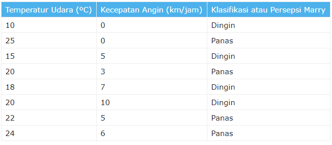
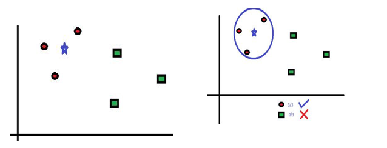
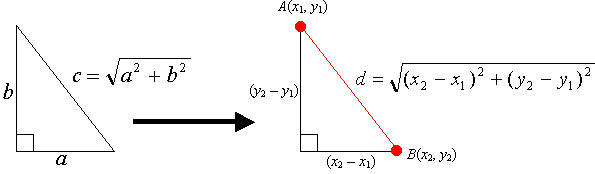
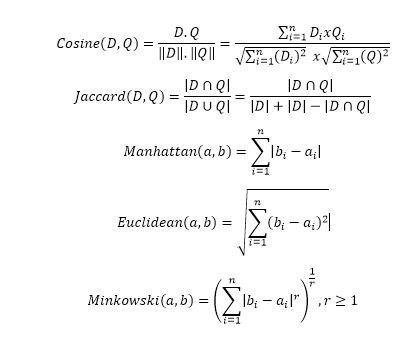
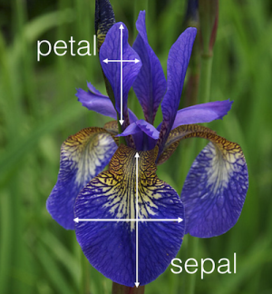
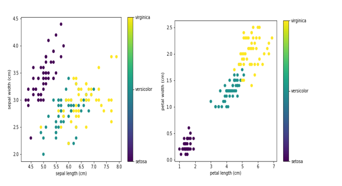

KNN data iris
Pengertian, Pengenalan, dan Contoh Implementasi K-Nearest Neighbor (KNN)
\1. Pendahuluan
Pada sekarang ini kebutuhan akan informasi semakin meningkat seiring dengan berkembangnya teknologi dalam menyebarkan informasi kepada masyarakat. Informasi yang dibutuhkan mengalami banyak perkembangan mulai dari informasi yang bersifat umum hingga informasi yang bersifat khusus. Banyaknya informasi dan dokumen yang tersedia mendorong pengguna untuk mencari cara lebih cepat dalam mendapatkan informasi dan dokumen yang dibutuhkan. Jika waktu pencarian terlalu lama, maka manfaat dari informasi yang diperoleh dapat berkurang. Hal ini dikarenakan informasi yang diperoleh sudah masuk waktu yang sudah tidak berguna atau tidak valid.
Klasifikasi dokumen dapat membantu proses pencarian sebuah dokumen dengan cepat dan tepat. Klasifikasi dokumen mengelompokan dokumen yang sesuai dengan katergori yang terkandung pada dokumen tersebut. Permasalahan klasifikasi dokumen bisa diselesaikan dengan banyak metode, salah satu diantaranya adalah K-Nearest Neighbor (KNN). Algoritma KNN merupakan sebuah metode untuk melakukan klasifikasi terhadap objek yang berdasarkan dari data yang jaraknya paling dekat dengan objek tersebut. Algoritma KNN merupakan sebuah metode untuk melakukan klasifikasi terhadap objek berdasarkan data pembelajaran yang jaraknya paling dekat dengan objek tersebut.Pengertian dan Cara Kerja Algoritma K-Nearest Neighbors (KNN)

K-nearest neighbors atau knn adalah algoritma yang berfungsi untuk melakukan klasifikasi suatu data berdasarkan data pembelajaran (train data sets), yang diambil dari k tetangga terdekatnya (nearest neighbors). Dengan k merupakan banyaknya tetangga terdekat.
A. Cara Kerja Algoritma K-Nearest Neighbors (KNN)¶
K-nearest neighbors melakukan klasifikasi dengan proyeksi data pembelajaran pada ruang berdimensi banyak. Ruang ini dibagi menjadi bagian-bagian yang merepresentasikan kriteria data pembelajaran. Setiap data pembelajaran direpresentasikan menjadi titik-titik c pada ruang dimensi banyak.
KLASIFIKASI TERDEKAT (NEAREST NEIGHBOR CLASSIFICATION)¶
Data baru yang diklasifikasi selanjutnya diproyeksikan pada ruang dimensi banyak yang telah memuat titik-titik c data pembelajaran. Proses klasifikasi dilakukan dengan mencari titik c**terdekat dari **c-baru (nearest neighbor). Teknik pencarian tetangga terdekat yang umum dilakukan dengan menggunakan formula jarak euclidean*.* Berikut beberapa formula yang digunakan dalam algoritma knn.
· Euclidean Distance¶
Jarak Euclidean adalah formula untuk mencari jarak antara 2 titik dalam ruang dua dimensi.
· Hamming Distance¶
Jarak Hamming adalah cara mencari jarak antar 2 titik yang dihitung dengan panjang vektor biner yang dibentuk oleh dua titik tersebut dalam block kode biner.
· Manhattan Distance¶
Manhattan Distance atau Taxicab Geometri adalah formula untuk mencari jarak d antar 2 vektor p,q pada ruang dimensi n*.*
· Minkowski Distance¶
Minkowski distance adalah formula pengukuran antar 2 titik pada ruang vektor normal yang merupakan hibridisasi yang mengeneralisasi euclidean distance dan mahattan distance.
Teknik pencarian tetangga terdekat disesuaikan dengan dimensi data, proyeksi, dan kemudahan implementasi oleh pengguna.
BANYAKNYA K TETANGGA TERDEKAT¶
Untuk menggunakan algoritma k nearest neighbors, perlu ditentukan banyaknya k tetangga terdekat yang digunakan untuk melakukan klasifikasi data baru. Banyaknya k, sebaiknya merupakan angka ganjil, misalnya k = 1, 2, 3, dan seterusnya. Penentuan nilai k dipertimbangkan berdasarkan banyaknya data yang ada dan ukuran dimensi yang dibentuk oleh data. Semakin banyak data yang ada, angka k yang dipilih sebaiknya semakin rendah. Namun, semakin besar ukuran dimensi data, angka k yang dipilih sebaiknya semakin tinggi.
ALGORITMA K-NEAREST NEIGHBORS¶
\1. Tentukan k bilangan bulat positif berdasarkan ketersediaan data pembelajaran.
\2. Pilih tetangga terdekat dari data baru sebanyak k.
\3. Tentukan klasifikasi paling umum pada langkah (ii), dengan menggunakan frekuensi terbanyak.
\4. Keluaran klasifikasi dari data sampel baru.
B. Contoh Aplikasi K Nearest Neighbor¶
Contoh berikut diambil dari buku “Data Science Algorithms in a Week” yang ditulis oleh Dávid Natingga.
Pada contoh ini, dilakukan klasifikasi suhu udara berdasarkan persepsi seseorang yang bernama Marry. Adapun klasifikasi suhu udara terdiri dari 2 persepsi yaitu Panas dan Dingin. Persepsi ini dapat diukur berdasarkan 2 variabel yaitu temperatur dalam derajat celcius dan kecepatan angin dalam km/h. Diperoleh data berikut,
Untuk contoh ini terbentuk ruang dimensi 2, yang berisi 2 kriteria yaitu temperatur udara dan kecepatan angin.

Pada proyeksi di atas sumbu vertikal adalah kecepatan angin, sumbu horizontal adalah temperatur suhu, warna biru adalah dingin, dan warna merah adalah panas.
Dari proyeksi diatas, dapat dilakukan klasifikasi data baru. Misalnya, Bagaimana persepsi Marry saat temperatur udara 16°C dan kecepatan angin 3km/jam.

Proses pencarian tetangga terdekat

Dapat diketahui tetangga terdekatnya adalah titik c dingin dengan temperature 15°C dan kecepatan angin 5km/jam. Jadi berdasarkan pemilihan k = 1, klasifikasinya adalah dingin.
Dengan melakukan proses di atas terhadap semua titik, diperoleh proyeksi klasifikasi berikut.

Catatan: Untuk pemilihan k lainnya, hasil klasifikasi ditentukan dengan frekuensi terbanyak. Misalnya k = 3, dengan titik terdekat dingin, panas, dingin. Hasil klasifikasi data baru tersebut adalah dingin.
\2. Pengertian K-Nearest Neighbor (KNN)¶
KNN adalah salah satu metode dimana metode ini melakukan klasifikasi berdasarkan data training atau data pembelajaran dilihat dari jarak yang paling dekat dengan objek berdasarkan nilai k. Metode ini bertujuan untuk mengklasifikasikan objek baru berdasarkan atribut dan training sample. Diberikan suatu titik query, selanjutnya akan ditemukan sejumlah K objek atau titik training yang paling dekat dengan titik query. Nilai prediksi dari query akan ditentukan berdasarkan klasifikasi tetanggaa Algoritma K-Nearest Neighbor (K-NN)** adalah sebuah metode klasifikasi terhadap sekumpulan data berdasarkan pembelajaran data yang sudah terklasifikasikan sebelumya. Termasuk dalam supervised learning, dimana hasil query instance yang baru diklasifikasikan berdasarkan mayoritas kedekatan jarak dari kategori yang ada dalam K-NN.
Dengan demikian, kelas KNeighborsClassifier dapat digunakan tanpa secara eksplisit menentukan nilai parameter apa pun. Nilai default sudah disediakan. Ini membuatnya mudah untuk menggunakannya untuk tujuan pembelajaran awal dan kemudian menambahkan nilai parameter, satu per satu. Inilah tepatnya yang akan saya lakukan. Kami akan menggunakan dataset iris untuk program demo kami. Kumpulan data Iris tersedia dalam sklearn itu sendiri.
Secara Sederhana K-nearest neighbors atau knn adalah algoritma yang berfungsi untuk melakukan klasifikasi suatu data berdasarkan data pembelajaran (train data sets), yang diambil dari k tetangga terdekatnya (nearest neighbors). Dengan k merupakan banyaknya tetangga terdekat. KNN ini dapat kita temukan bilamana kita sedang belajar Machine Learning. ML intinya berkaitan dengan automasi atau bagaimana sebuah machine dapat belajar dari contoh-contoh yang kita berikan, terus memprediksi sesuatu yang sesuai dengan contoh-contoh tadi.
Lihat gambar di bawah, misalnya terdapat dua kategori yang ditunjukkan dengan Lingkaran Merah (LM) dan Kotak Hijau (KH). Kemudian kita hendak mengetahui kategori dari Bintang Biru (BB). BB dapat berupa LM atau tidak keduanya (gambar sebelah kiri). K adalah jumlah tetangga terdekat yang akan kita gunakan, asumsikan saja k = 3 (gambar sebelah kanan). Tentu dari sini kita bisa dapat segera tahu dengan membuat lingkaran yang memungkinkan BB menjadi di tengah-tengah 3 titik terdekat. Tiga titik terdekat ke BB adalah LM. Oleh karena itu, dengan sangat yakin kita dapat mengatakan bahwa BB mempunyai kelas LM. Dari sini tentu kita sadar, bahwa penentuan nilai K sangat penting pada algoritma KNN.

ilustrasi KNN
Penentuan jarak terdekat diantara dua titik di atas dapat menggunakan dalil Pythagoras, akan tetapi bilamana terdapat lebih dari dua feature/independent variable kita dapat menggunakan euclidean distance, jaccard, cosine, manhattan, minkowski, dll.

Rumus Pythagoras

Beberapa metode pengukuran jarak
Kalau diterapin di SIG (Sistem Informasi Geografis) tentu bisa dong? yup tentu sangat bisa. Misal untuk menentukan lokasi dari dua titik. Lihat gambar di bawah ini untuk lebih jelasnya..

contoh di ranah SIG sederhana
Secara garis besar dalam dunia data mining atau data science terdapat 2 pendekatan untuk melakukan teknik — teknik data mining. Supervised learning adalah sebuah pendekatan dimana sudah terdapat data yang dilatih, dan terdapat variable yang ditargetkan sehingga tujuan dari pendekatan ini adalah mengkelompokan suatu data ke data yang sudah ada, lain halnya dengan unsupervised learning, unsupervised learning tidak memiliki data latih, sehingga dari data yang ada, kita mengelompokan data tersebut menjadi 2 bagian atau 3 bagian dan seterusnya.
Sederhananya, Supervised itu artinya sudah ter*manage* dengan baik (data yang fitur dan labelnya udah jelas). Misal jikalau terdapat ciri-ciri daun yang phyllotaxis-nya berhadapan berseling, circumscriptio berbentuk jorong, apex falii berbentuk runcing, dan nervatio menyirip itu berarti sudah jelas mengkudu (Morinda citrifolia). Sedangkan Unsupervised learning targetnya atau labelnya belum jelas. Metode yang dipakai biasanya Clustering. Jadi kita cuma ngelompokin data yang punya keterkaitan satu sama lain, tanpa tahu mereka sebenernya bener-bener satu label atau enggak. Algoritma Supervised Learning misalnya Decision tree, Nearest — Neighbor Classifier, Naive Bayes Classifier, Artificial Neural Network, dll. Algoritma *Unsupervised Learning*misalnya K-Means, Hierarchical Clustering, DBSCAN, dll.
\3. Iris Datasets¶
Kali ini saya menggunakan Python untuk melakukan coba-coba model. Disini saya menggunakan dataset iris. Dataset ini sangat populer digunakan untuk latihan pertama (R atau python). Iris biasanya sudah tersedia didalam modul sklearn (lengkap dengan target dan feature) atau jika kita belum install sklearn
# code untuk install modul sklearn
pip install -U scikit-learn #jika menggunakan pip yang ada di python
conda install scikit-learn #jika menggunakan anaconda
Terdapat 150 observasi (row) dengan feature/independent variable sebanyak 4 (Panjang sepal, lebar sepal, panjang petal, dan lebar petal). 150 observasi tersebut dibagi menjadi 50 observasi pada masing-masing spesies (Iris setosa, Iris versicolor, dan Iris virginica). Pada data iris, kita tidak akan menjumpai nilai null (N/A), sehingga kita tidak perlu capek-capek untuk merapikan data tersebut.

Pengukuran petal dan sepal
Pada gambar di bawah saya menggunakan atom dengan data iris yang sudah secara default berada pada modul sklearn. Kita tinggal memanggil data tersebut. Kemudian seperti biasa, kita definisikan variabel untuk memanggil data tersebut, dalam hal ini iris = load_iris().

scatter plot menggunakan data iris yang sudah tersedia di modul sklearn

Hasil grafik dari kode menggunakan atom
Untuk gambar di bawah ini saya menggunakan jupyter notebook, dengan data iris hasil download dengan format file csv. Modul Pandas dapat mempermudah kita dalam pemanggilan dataset yang kita butuhkan, untuk lebih jelasnya dapat dibaca disini. Penilaian subjektif saya, jika membandingkan atom dan jupyter notebook, saya lebih suka menggunakan jupyter notebook, karena selain ringan dia juga dapat mengeksport code-code yang telah kita tulis menggunakan ekstensi Gist-it ke github yang kita miliki.
In [2]:
import pandas as pd # import file menggunakan pandas
dataset = pd.read_csv('iris.csv')
In [3]:
dataset.head(5) #menampilkan dataset 5 teratas
Out[3]:
| sepal_length | sepal_width | petal_length | petal_width | species | |
|---|---|---|---|---|---|
| 0 | 5.1 | 3.5 | 1.4 | 0.2 | setosa |
| 1 | 4.9 | 3.0 | 1.4 | 0.2 | setosa |
| 2 | 4.7 | 3.2 | 1.3 | 0.2 | setosa |
| 3 | 4.6 | 3.1 | 1.5 | 0.2 | setosa |
| 4 | 5.0 | 3.6 | 1.4 | 0.2 | setosa |
In [4]:
dataset.groupby('species').size() #menampilkan row masing-masing spesies
Out[4]:
species
setosa 50
versicolor 50
virginica 50
dtype: int64
\4. Membuat data frame pada masing-masing spesies
In [5]:
setosa = dataset[dataset['species']=='setosa']
versicolor = dataset[dataset['species']=='versicolor']
virginica = dataset[dataset['species']=='virginica']
In [6]:
setosa.describe()
Out[6]:
| sepal_length | sepal_width | petal_length | petal_width | |
|---|---|---|---|---|
| count | 50.00000 | 50.000000 | 50.000000 | 50.00000 |
| mean | 5.00600 | 3.418000 | 1.464000 | 0.24400 |
| std | 0.35249 | 0.381024 | 0.173511 | 0.10721 |
| min | 4.30000 | 2.300000 | 1.000000 | 0.10000 |
| 25% | 4.80000 | 3.125000 | 1.400000 | 0.20000 |
| 50% | 5.00000 | 3.400000 | 1.500000 | 0.20000 |
| 75% | 5.20000 | 3.675000 | 1.575000 | 0.30000 |
| max | 5.80000 | 4.400000 | 1.900000 | 0.60000 |
In [7]:
virginica.describe()
Out[7]:
| sepal_length | sepal_width | petal_length | petal_width | |
|---|---|---|---|---|
| count | 50.00000 | 50.000000 | 50.000000 | 50.00000 |
| mean | 6.58800 | 2.974000 | 5.552000 | 2.02600 |
| std | 0.63588 | 0.322497 | 0.551895 | 0.27465 |
| min | 4.90000 | 2.200000 | 4.500000 | 1.40000 |
| 25% | 6.22500 | 2.800000 | 5.100000 | 1.80000 |
| 50% | 6.50000 | 3.000000 | 5.550000 | 2.00000 |
| 75% | 6.90000 | 3.175000 | 5.875000 | 2.30000 |
| max | 7.90000 | 3.800000 | 6.900000 | 2.50000 |
In [8]:
virginica.describe()
Out[8]:
| sepal_length | sepal_width | petal_length | petal_width | |
|---|---|---|---|---|
| count | 50.00000 | 50.000000 | 50.000000 | 50.00000 |
| mean | 6.58800 | 2.974000 | 5.552000 | 2.02600 |
| std | 0.63588 | 0.322497 | 0.551895 | 0.27465 |
| min | 4.90000 | 2.200000 | 4.500000 | 1.40000 |
| 25% | 6.22500 | 2.800000 | 5.100000 | 1.80000 |
| 50% | 6.50000 | 3.000000 | 5.550000 | 2.00000 |
| 75% | 6.90000 | 3.175000 | 5.875000 | 2.30000 |
| max | 7.90000 | 3.800000 | 6.900000 | 2.50000 |
In [9]:
# deskripsi dataset secara kesuluruhan
dataset.describe()
Out[9]:
| sepal_length | sepal_width | petal_length | petal_width | |
|---|---|---|---|---|
| count | 150.000000 | 150.000000 | 150.000000 | 150.000000 |
| mean | 5.843333 | 3.054000 | 3.758667 | 1.198667 |
| std | 0.828066 | 0.433594 | 1.764420 | 0.763161 |
| min | 4.300000 | 2.000000 | 1.000000 | 0.100000 |
| 25% | 5.100000 | 2.800000 | 1.600000 | 0.300000 |
| 50% | 5.800000 | 3.000000 | 4.350000 | 1.300000 |
| 75% | 6.400000 | 3.300000 | 5.100000 | 1.800000 |
| max | 7.900000 | 4.400000 | 6.900000 | 2.500000 |
In [10]:
# count menjelaskan bahwa semua 4 features mempunyai 150 row
# secara umum, dari rata-rata kita dapat mengatakan bahwa sepal lebih besar dari petal
In [16]:
import matplotlib.pyplot as plt
plt.figure()
fig,ax=plt.subplots(1,2,figsize=(15, 5))
setosa.plot(x="sepal_length", y="sepal_width", kind="scatter",ax=ax[0],label='setosa',color='r')
versicolor.plot(x="sepal_length",y="sepal_width",kind="scatter",ax=ax[0],label='versicolor',color='b')
virginica.plot(x="sepal_length", y="sepal_width", kind="scatter", ax=ax[0], label='virginica', color='g')
setosa.plot(x="petal_length", y="petal_width", kind="scatter",ax=ax[1],label='setosa',color='r')
versicolor.plot(x="petal_length",y="petal_width",kind="scatter",ax=ax[1],label='versicolor',color='b')
virginica.plot(x="petal_length", y="petal_width", kind="scatter", ax=ax[1], label='virginica', color='g')
ax[0].set(title='Perbandingan Sepal', ylabel='Lebar sepal (cm)')
ax[1].set(title='Perbandingan Petal', ylabel='Lebar petal(cm)')
ax[0].legend()
ax[1].legend()
plt.savefig('asda.png')
import numpy as np
from sklearn import neighbors, datasets
from sklearn import preprocessing
n_neighbors = 6
# import some data to play with
iris = datasets.load_iris()
# prepare data
X = iris.data[:, :2]
y = iris.target
h = .02
# we create an instance of Neighbours Classifier and fit the data.
clf = neighbors.KNeighborsClassifier(n_neighbors, weights='distance')
clf.fit(X, y)
# make prediction
sl = input('Enter sepal length (cm): ')
sw = input('Enter sepal width (cm): ')
dataClass = clf.predict([[sl,sw]])
print('Prediction: '),
if dataClass == 0:
print('Iris Setosa')
elif dataClass == 1:
print('Iris Versicolour')
else:
print('Iris Virginica')